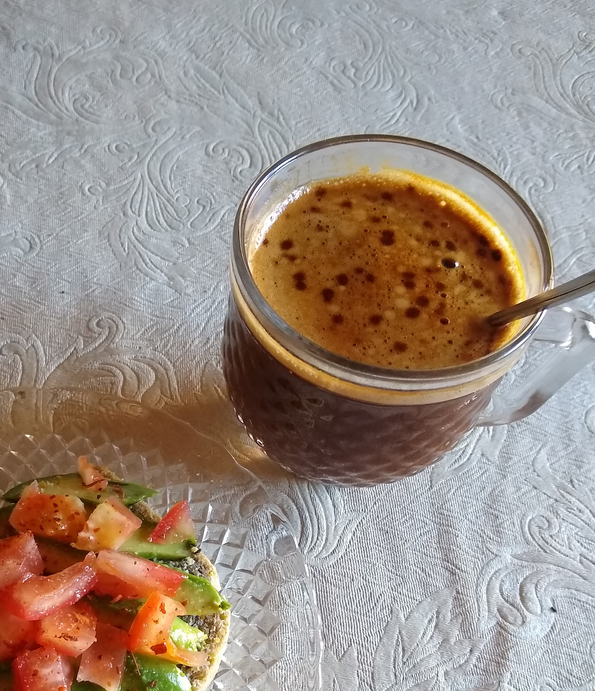

Leche de Avena

Descripcion
ni idea bro
Ingredientes
- un cuarto de taza de hojuelas de avena
- agua fria
Pasos a Seguir
- remojar durante toda la noche la avena en dos o tres partes de agua
- al otro dia, enjuagar y colocar la avena remojada y un litro de agua en la licuadora
- licuar
- con un filtro para quesos o una bolsa de lienzillo separar la okara de la leche de avena
- guardar en la heladera, esta lista para consumir